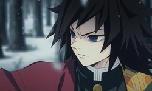
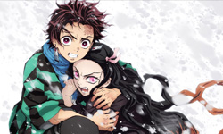
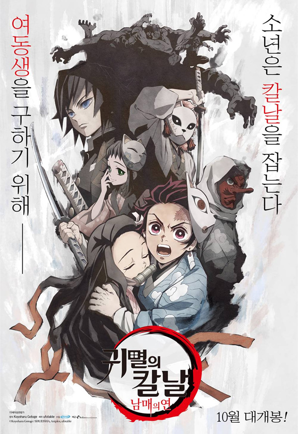
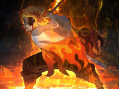
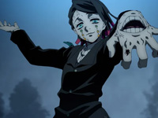
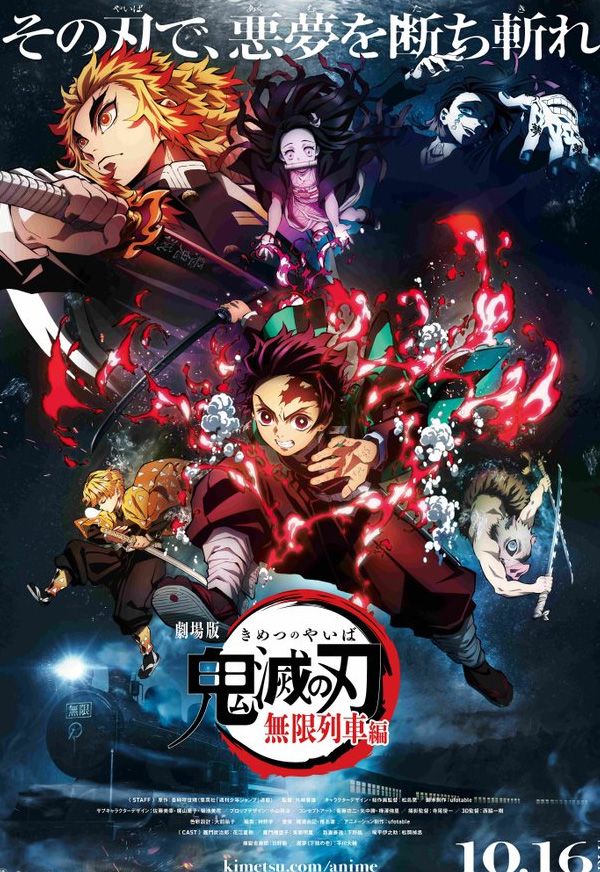
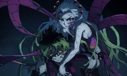
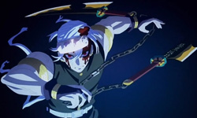
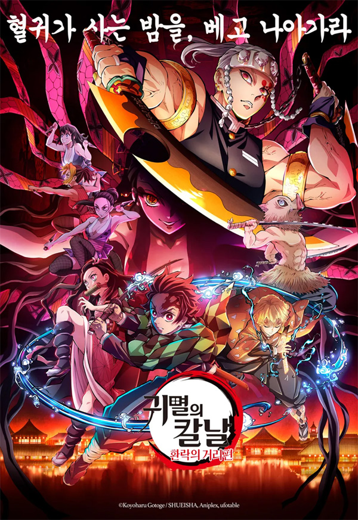

story
about
It was the Taisho era, and the main character, Kamado Tanjiro, was poor but living a happy life with his family. Tanjiro, who wanted to feed his family by selling lots of charcoal before the Lunar New Year, goes down to the village alone and sells charcoal. He goes on his way home after dark to help the villagers, but the old man, who lives on the outskirts of the village, dissuades him by saying that a goblin that eats people appears at night, and lets him stay at his house for the night. Arriving home in a bright day, Tanjiro saw his family slain horribly, and tried to take her to the doctor to save his only surviving sister, Nezuko, but Nezuko turned into a man-eating goblin.
series
-
step.1
When Urokodaki arrives at Mount Sagiri, Tanjiro undergoes rigorous training for two years, receiving advice from a boy named Sabito and a girl named Makomo to learn the proper fatigue of full-concentration breathing. After that, you have to pass the final selection of demon flesh, enlist in the demon slaughter squad, meet with Haganezuka Hotaru, the blacksmith in charge, and request a one-wheeled sword, and continue to forge it to get the first multiple with the awakened Nezuko.
- 
- 
 -
step.2
Tanjiro, who became a member of the secret organization Demon Slayer Team in order to restore his sister Nezuko, who had turned into a blood demon, goes on a mission with Zenitsu and Inosuke on an infinite train. Tanjiro and the others encounter an unexpected cannibalistic demon on the infinite train, and start a life-and-death struggle to save the passengers against the demon.
- 
- 
 -
step.3
Four months after the dehydration of Rengoku Kyojuro, a drunk Tengen Uzui infiltrated the brothel because the demon was in the Yoshiwara brothel. A bloody battle continues, and Tengen finally joins in and Taki is decapitated, but Taki does not die, and his older brother Kyu-taro comes out of his body and attaches his neck, and the second battle between Taki & Gyu-taro and the main characters begins.
- 
- 
